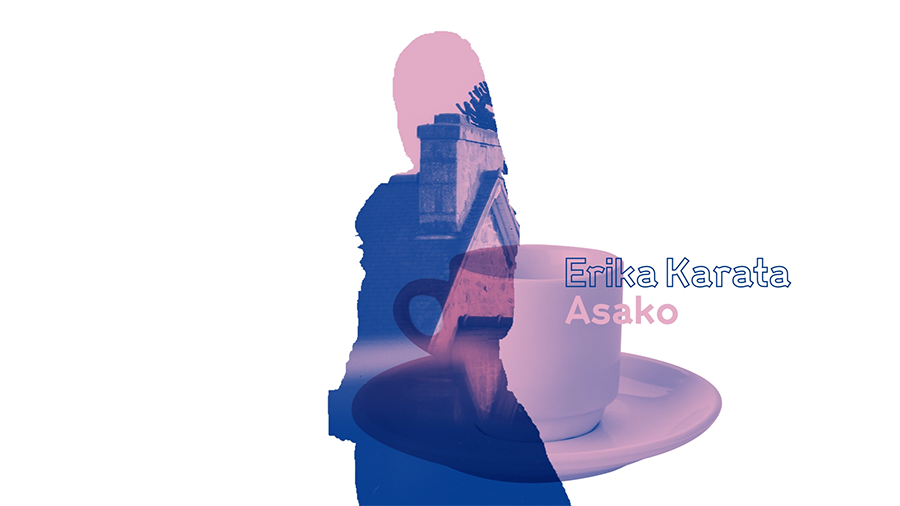
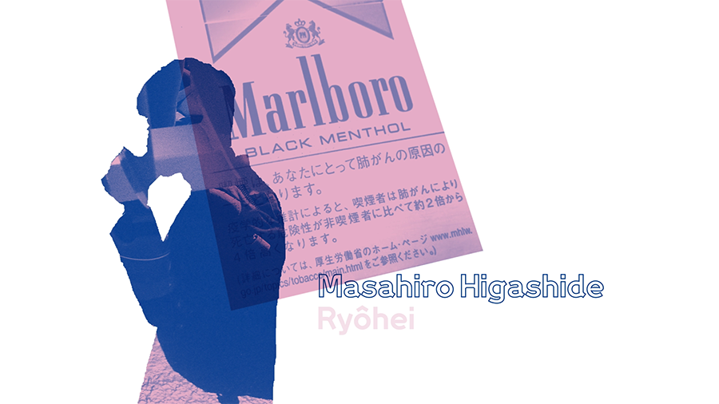

← Retour
Asako I&II
#MotionDesign #2D #Video
Alternative ending credits for the movie Asako I&II (2018) by Ryūsuke Hamaguchi.
Blending images and shots from the movie together using the rotobrush tool.

